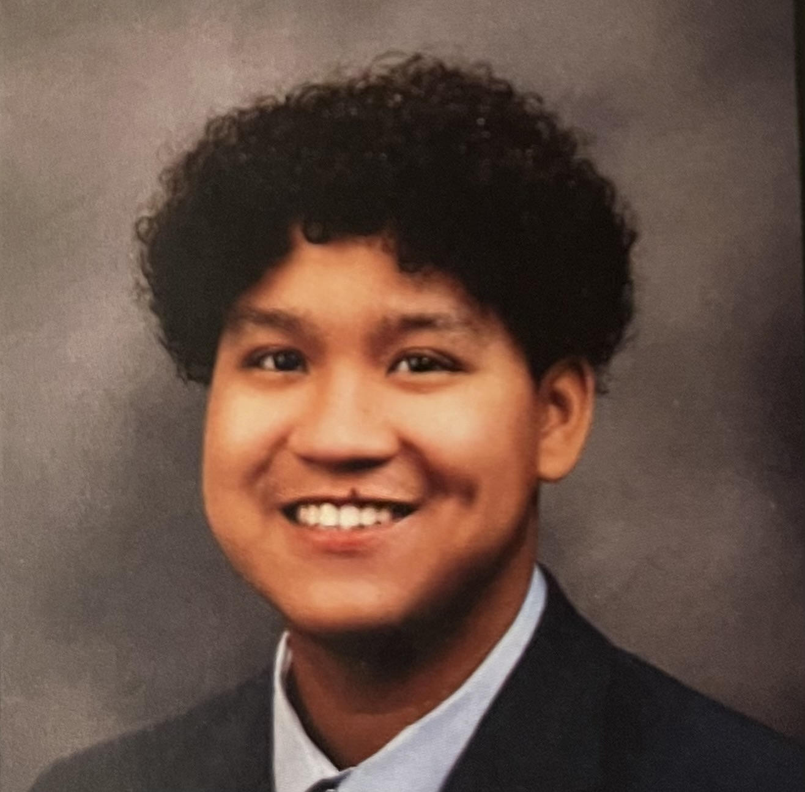

Floyd Givehand Jr

Objective:
Seeking a web developer position in order to utilize my skill set to create user friendly websites accross the world.
Education:
- Bachelor of Business and Administatrion in Computer Information Systems (Expected June 2028)
California State Polytechnic University,[Pomona, California]
- High School Diploma(GPA:4.5)
Diamond Ranch Highschool.[Pomona, California]
Work Experience:
T.J. Maxx - Backroom Associate
September July 2024 - Present
- Unload boxes from a truck and process items by making sure they are not damaged
- Help organize the backroom by making sure each product is in the right tote so the front of the store can easily get their tote and push it to their department they are working in
Baskin-Robins - Team member
July 2023 - Feburary 2024
- I helped serve customers by giving them ice cream of their choice
- Wash dishs, windex windows, and clean tables/counters.
- Take out the trash
- Make sure all the ice cream is restocked
- Charging customer for their transactions
McDonalds - Crewmember
May 2022 - July 2022
- I helped cook cook the food for the assembly line at McDonalds so they can make the orders
- Wash dishes
- Wipe down tables and counters
Skills
- Communication: Strong verbal and written communication skills. If I see an issue with a project or code I will let the team know promptly in a professional matter.
- Time Management and punctual: Consistently meet deadlines on projects. Will always be on time when showing up to work.
- Curiosity: Enthusiastic about learning new programming languages and styles, dedicated to research.
- Some knowledge/experience with User Interface to using Figma
Other